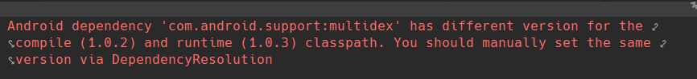

引言
编译项目时，有时会出现某个库运行时和编译时版本不一致或者冲突的问题。这时就可以通过Gradle 命令来查看项目依赖树，找出冲突的库然后排除掉解决。
如下图：

查看依赖树
打开Android Studio的终端，输入以下命令，就能够看到输出的依赖树信息:
1 | gradlew :app:dependencies |
这里的app，指的是module的名字。一般一个项目里会有多个module，在这里完全可以把app换成指定module名。这个模块名字，就是在setting.gradle文件中指定的module名。
如，这里我需要查看home模块里的依赖树，在终端输入：
1 | gradlew :module-home:dependencies |
得到结果如下图：
可以看到，终端打印出来的信息太多了，不方便我们查看。
其实，这个命令是会将Gradle执行的各个步骤下的依赖树全部打印出来，包括 debugApk、debugCompile、releaseApk、releaseCompile、compile 等全部打印出来，耗费时间长不说，最后的结果集也是一大片，不例于查看。但是我们只是需要一个依赖树就足够了，这个命令还提供了一个参数就可以解决。
1 | gradlew :module-home:dependencies --configuration releaseRuntimeClasspath |
这样的话，终端就只会出现一个依赖树。
但还有一个问题，依赖树过长的过，终端查看不方便，那我们可以把终端日志导入到文本文件中。
1 | gradlew :module-home:dependencies --configuration releaseRuntimeClasspath >log.txt |
这样的话，打印出来的信息全部会写入到项目根目录下的log.txt文件
排除依赖
这里要排除掉社区模块依赖的Base模块中的multiDex，Gradle语句如下：
1 | api ("${WYDependenciesWithoutVersion['wy_doctor_base']}1.0.0-SNAPSHOT"){ |